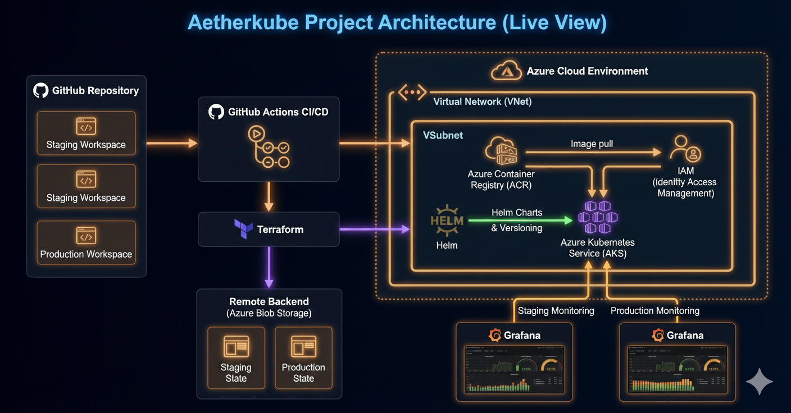
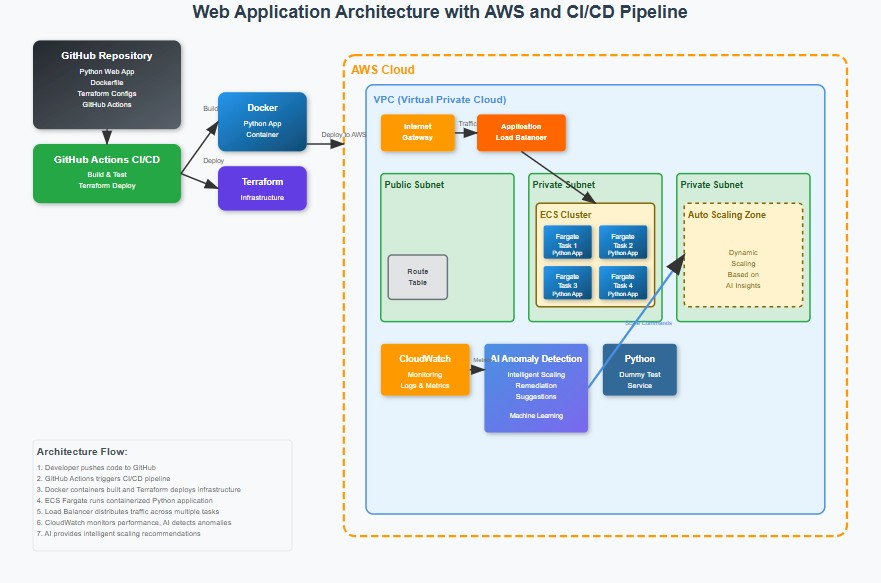

Professional Summary
DevOps & Site Reliability Engineer with hands-on experience in designing cloud-native applications and automating infrastructure across AWS, Azure, and GCP. Skilled in CI/CD pipeline development, Kubernetes orchestration, observability and test automation using Python. Experienced in building reliable, scalable platforms with Terraform, Docker, Jenkins, and GitHub Actions. Strong background in log analysis, monitoring, root-cause investigation, and performance optimization through real-time dashboards and AI-driven anomaly detection. Passionate about reliability engineering, automation, and enhancing system resilience.
Skills
Cloud, Containers, CI/CD, IaC, Observability, Scripting
AWS
Azure
GCP
Kubernetes
Terraform
Docker
Jenkins
GitHub Actions
Helm
Grafana
Python
Bash
CloudFormation
Lambda
ECR/ACR
Featured Projects
Selected work: cloud architecture, CI/CD automation, monitoring and reliability.
AetherKube – Azure + AKS + Terraform

Built full Azure infrastructure using Terraform (remote backend, AKS, ACR, VNet, IAM). Automated CI/CD with GitHub Actions: Docker build → ACR push → Helm deployments to AKS. Used Helm for versioning, rollbacks, and multi-environment deployments.
- Terraform remote backend & AKS Autopilot configuration
- Helm charts & multi-environment (staging/production) deployments
- CI: build → push → deploy via GitHub Actions
- Integrated Azure Monitor for cluster + app metrics and logs
- Deployed Flask multi-service app using GitOps-style workflows
Skydock – Real-Time Cloud Monitoring Dashboard
- Flask backend containerized with Docker
- AWS CloudWatch integration for real-time monitoring
- Frontend hosted on S3 with API integration
- Implemented CI/CD pipeline with GitHub Actions
- Demonstrates expertise in cloud monitoring, DevOps automation, and full-stack cloud architecture
Kairoz – Jenkins CI/CD to GKE Autopilot
- Jenkins on EC2 orchestrates builds and deployments
- Used Docker and GCP Container Registry to manage and deploy container images
- GCR / GKE Autopilot for production workloads
- Integrated IAM, kubectl, and gcloud authentication for seamless infrastructure-level deployments
- Image permissions and IAM roles properly configured
Orpheus – AI-Powered Log Anomaly Detection

- AI-powered anomaly detection from CloudWatch logs
- Integration with Grafana for visualization
- AWS Lambda for automated response to critical patterns
- Uses pre-trained AI logic to suggest automated remediation steps (e.g., scale-up)
- Focused on intelligent observability and operational resilience—improves MTTR
Experience
Data Analyst Intern
Oeson
April 2023 - June 2023
Birmingham, UK
- Created Python scripts to automate data processing, increasing business intelligence dashboard reporting efficiency by 20%.
- Analysed and validated data using SQL, assisting with the establishment of data pipelines similar to AWS CloudWatch log processing.
- Identified automation opportunities and contributed to process improvements that influenced CI/CD workflow design.
Quality Analyst
Tata Consultancy Services
October 2019 - April 2021
Hyderabad, India
- Achieved 100% quality results consecutively for period of 3 months.
- Played pivotal role in maintaining and improving overall quality of outsourced processes, contributing to client SLA satisfaction and business success.
- Conducted comprehensive reviews of transactions and activities to ensure adherence to established policies, procedures, and regulatory requirements.
Education
M.Sc. International Business Management
Coventry University, Coventry
Graduated 2022
B.Com Computer Science
Krishna University, Andhra Pradesh
Graduated 2019
Certifications
AWS Cloud Practitioner Essentials
May 2025
AWS Solutions Architect Associate
July 2025
Docker Foundations Professional
August 2025
Programming with Python Professional
October 2025